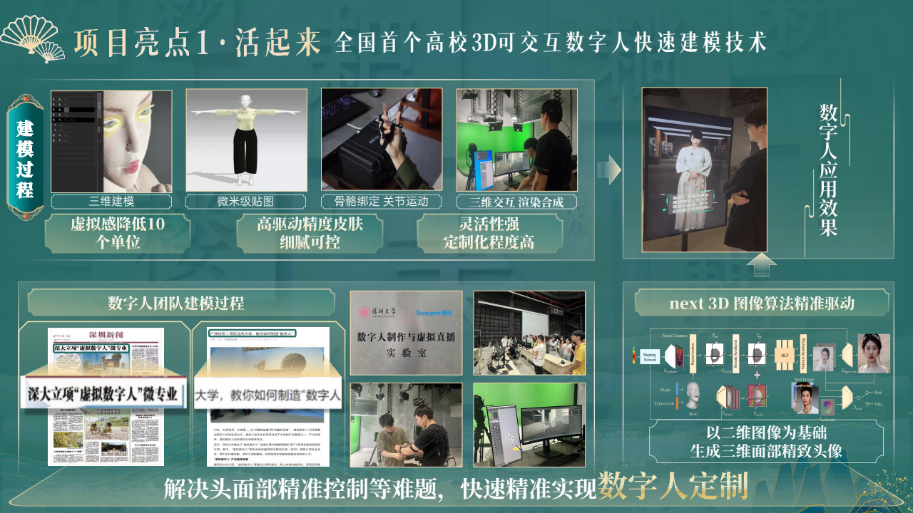
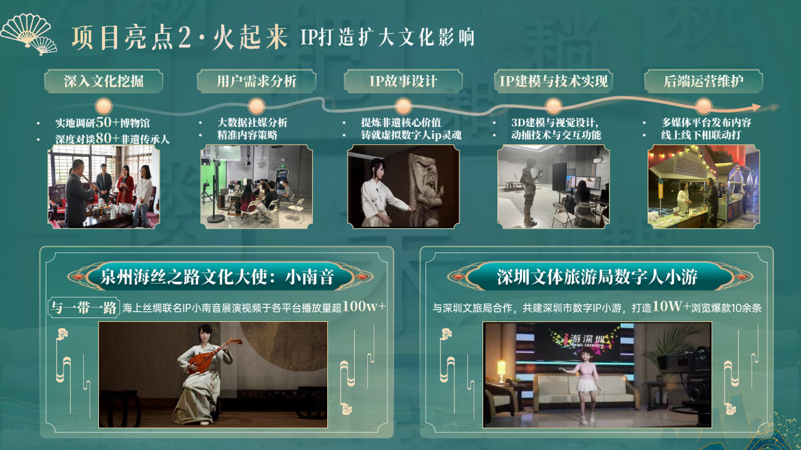
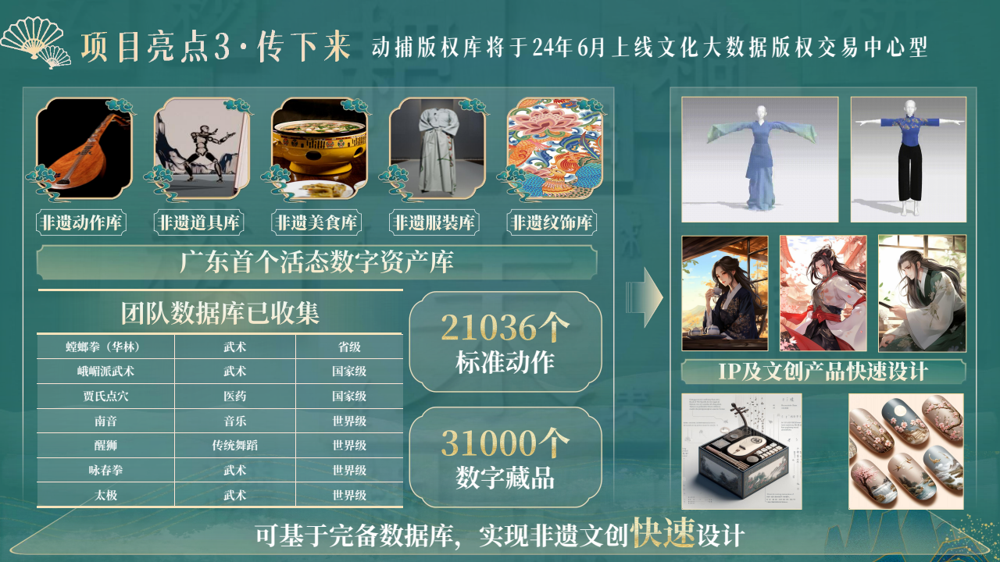
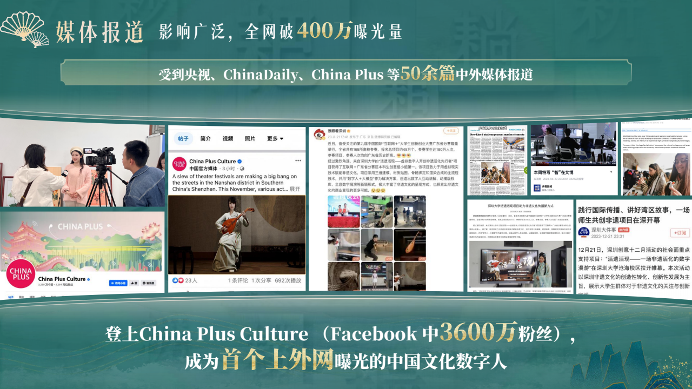
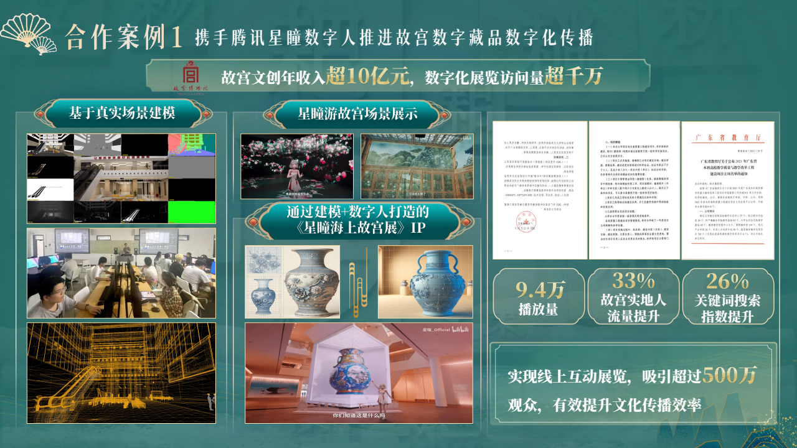
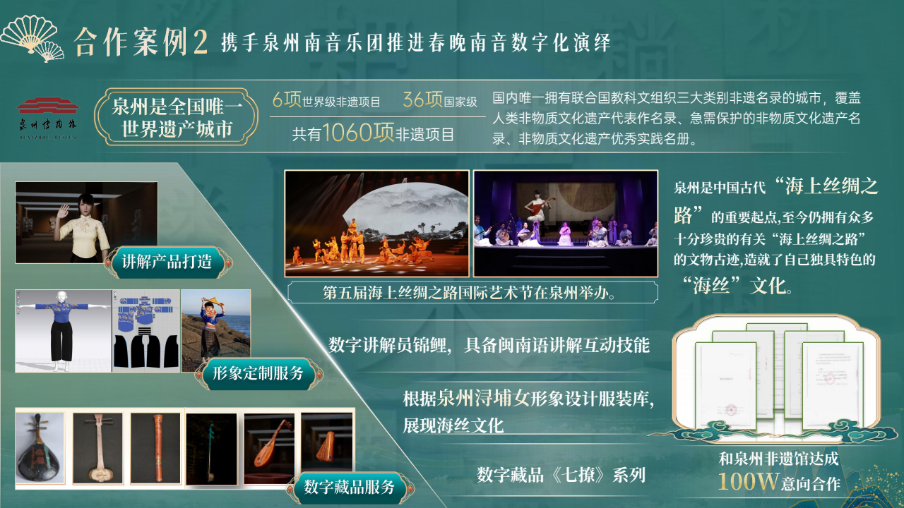
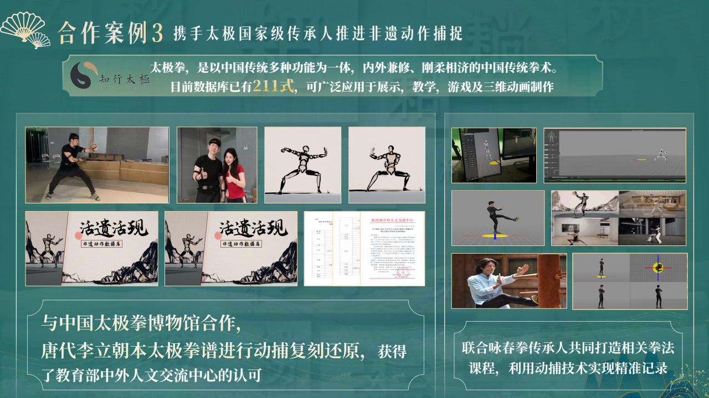

← 返回首页 · AI NATIVE
《活遗活现》
大创优秀结项 · 项目负责人
互联网+ 国赛铜奖
入选 2024 科创中国
《活遗活现》
AI 数字人非遗活化
用 AI 数字人技术让非遗「活起来、火起来、传下去」——以全国首个高校 3D 可交互数字人快速建模技术为底座， 打造非遗数字人 IP 并落地故宫、泉州非遗馆等真实场景。我负责产品形态定义、IP 内容策划、资源对接与商业转化。
3大核心亮点：活起来 · 火起来 · 传下去
500万+线上互动展览观众
100万泉州非遗馆意向合作
400万+全网媒体曝光
01
解决什么具体问题
非遗传播面临三个断点：
断点一
年轻人不看
非遗传播老龄化严重，静态展板 + 人工讲解的单向传播，年轻人参与度低、不买账。
断点二
机构不挣钱
非遗数字化保护手段简单，文物机构自我造血能力弱，数字化投入难以持续。
断点三
内容不出圈
非遗有深厚的文化价值，但缺少能被记住、被传播、被消费的当代表达形式。
为什么现有方式不够
传统展馆讲解覆盖有限；通用数字人方案建模贵、虚拟感重、没有非遗内容资产；普通文创缺 IP 灵魂、买完即忘。
项目的差异化 = 快速建模技术（做得快、做得像）× 活态数字资产库（有内容底座）× IP 打造全流程（会讲故事、会运营）。
02
产品设计原理：三大亮点
三者缺一，非遗数字人就只是一个昂贵的吉祥物。

亮点 1 · 活起来全国首个高校 3D 可交互数字人快速建模
- 三维建模 → 微米级贴图 → 骨骼绑定 → 三维交互渲染全链路；以二维图像生成三维面部头像，解决头面部精准控制难题
- 虚拟感降低 10 个单位；深大立项「虚拟数字人」微专业；获 2 项发明专利

亮点 2 · 火起来非遗 IP 打造五步流程
- 文化挖掘（调研 50+ 博物馆、对谈 80+ 传承人）→ 社媒大数据分析 → IP 故事设计 → 建模实现 → 多媒体运营
- 代表 IP：小南音（泉州海丝文化大使，播放 100 万+）、小游（深圳文体旅游局共建，10W+ 爆款 10 余条）

亮点 3 · 传下去广东首个活态数字资产库
- 动作 / 道具 / 美食 / 服装 / 纹饰五大库：21,036 个标准动作、31,000 个数字藏品，覆盖南音、醒狮、咏春、太极等世界级非遗
- 动捕版权库上线文化大数据版权交易中心，支持非遗文创快速设计

媒体破圈首个上外网曝光的中国文化数字人
- 央视、China Daily、China Plus 等 50 余篇中外媒体报道，全网曝光破 400 万
- 登上 China Plus Culture（Facebook 3,600 万粉丝）
03
实质效果：三个真实合作案例
不是比赛 PPT 上的设想，是已经落地的合作。
案例 1 · 故宫 × 腾讯星瞳
《星瞳海上故宫展》IP
建模 + 数字人打造线上互动展：9.4 万播放量，吸引超 500 万观众；带动故宫实地人流量提升 33%、关键词搜索指数提升 26%。
案例 2 · 泉州非遗馆
数字讲解员「锦鲤」落地
携手泉州南音乐团推进春晚南音数字化演绎；闽南语互动讲解员落地非遗馆，浔埔女服装库 +《七撩》数字藏品，达成 100 万意向合作。
案例 3 · 太极动捕
唐代太极拳谱数字化复刻
与中国太极拳博物馆合作，动捕复刻唐代李立朝本太极拳谱（211 式入库，可用于展示/教学/游戏），获教育部中外人文交流中心认可。



这个项目证明了什么
- 把 AI 技术包装成有商业闭环的产品：定义产品形态 → 内容策划 → 资源对接 → 落地转化
- 与联想、影石项目呼应：一个证明 AI 工具在企业里推得动，一个证明模糊问题能拆成系统，这个项目证明 AI 产品能卖出去